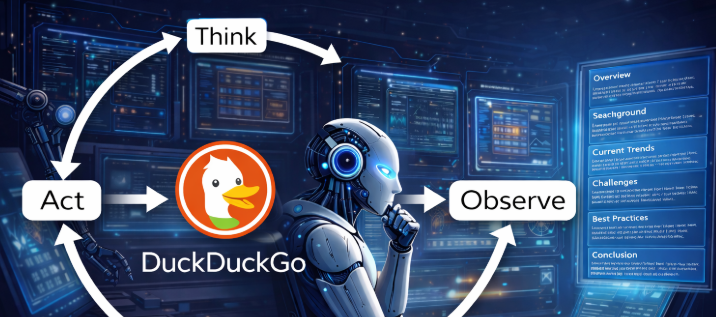

Tulika Das
I build agentic AI systems that reason, act, and deliver — from multi-agent pipelines to RAG-powered solutions.
Open to AI Engineer roles

I build agentic AI systems that reason, act, and deliver — from multi-agent pipelines to RAG-powered solutions.
About
Based in India with a deep focus on large language models, retrieval-augmented generation, and agentic AI systems. I enjoy the full arc of building — from designing pipelines and evaluating models to shipping clean, working code.
My recent work spans scalable LLM backends, memory-based systems, hybrid RAG architectures, and AI safety tools. I care about building things that are not just technically interesting but genuinely useful.
Experience
AI Engineer Intern
Tulu Health, Delhi
AI Intern
Neuro Web Solutions, Rajkot
Projects
Multi-Agent Complaint System
Problem
Urgent complaints get buried under low-priority tickets, causing missed escalations.
Solution
Multi-agent system with LangGraph + Llama-3 that auto-routes by urgency, escalates to human managers, and sends automated resolutions.

Autonomous Research Agent (ReAct)
Problem
Manual research is slow and fragmented — hours of reading to synthesize a single topic.
Solution
ReAct agent using LangGraph + Groq that autonomously searches multiple angles and compiles a structured 6-section report.
SheGuard AI
Problem
Existing safety tools for women are reactive, alerting after danger occurs rather than providing proactive, situational guidance.
Solution
AI safety advisor using Llama-3.3-70b + LangChain with Chain-of-Thought reasoning, age-specific safety tips, self-defense techniques, and relevant resources.

Production-Ready LLM Backend
Problem
Production LLM deployment needs more than API calls, teams need rate limiting, cost control, auth, and fallback logic from day one.
Solution
FastAPI backend with per-user rate limiting, token cost accounting, auth, and provider fallback, the unglamorous layer that makes LLMs production-worthy.
Recognition
🏆 Distinguished Social Impact Innovation
Agentic AI Innovation Challenge 2025 · Ready Tensor
Built SheGuard, an AI-powered personal safety advisor for women, using LLaMA 3.3-70b, LangChain, and deployed on Hugging Face Spaces. Ranked in the top 38 out of 671 entries in the Distinguished Social Impact Innovation category.
Read PublicationSkills
Core Stack
LLM & Retrieval
Dev & Deployment
ML Foundations
Blog
RAG · Evaluation · RAGAS
My RAG Pipeline Looked Fine Until I Measured It
Built a RAG system, ran a few queries, called it done. Turns out that was just expensive vibe checking. Here's what RAGAS revealed about silent failures in retrieval and generation.
LangGraph · Multi-Agent · Production
LangGraph is the Easy Part. Here's the Hard 80%
Getting it to work locally was just the first step. This is what it actually takes to ship a multi-agent complaint routing system into the real world.
Education
MSc in Data Science
Vellore Institute of Technology, Amaravati
BSc in Mathematics
Ispat Autonomous College, Rourkela